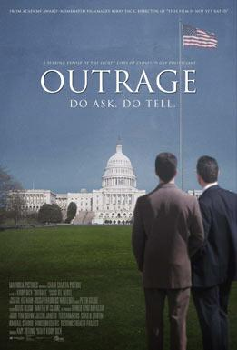

请选择：
 业余翻译这本书的想法，实在看了纪录片outrage（被损害的愤怒）后就有的，其中 James E. McGreevey，这位美国前新泽西州长让我印象很深， 在妻子的陪同下，他于2004年8月12日召开发布会出柜，坦言“我的一生都在与我真实的自己挣扎。孩提时，我就经常矛盾，关于我自己，事实上，我很疑惑”。 一个人要“真切地审视自己的灵魂，然后选择唯一存在的真相，我的真相是，我是一个美国同志。”